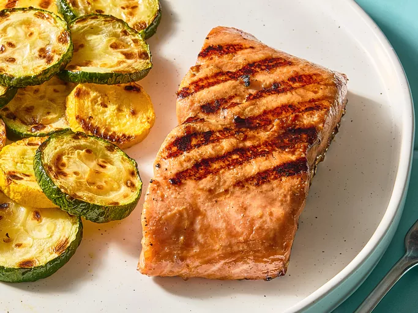

Grilled salmon

Description
A tasty grilled salmon with a simple soy sauce and brown sugar marinade, with hints of lemon and garlic which perfectly complement rich salmon fillets with it's salty-sweet flavor.
Ingredients
- 1 1/2 pounds salmon fillets
- lemon pepper to taste
- garlic powder to taste
- salt to taste
- 1/3 cup soy sauce
- 1/3 cup brown sugar
- 1/3 cup water
- 1/4 cup vegetable oil
Steps
- Gather all Ingredients
- Season salmon fillets with lemon pepper, garlic powder, and salt.
- Stir soy sauce, brown sugar, water, and vegetable oil together in a small bowl until sugar is dissolved. Place fish in a large resealable plastic bag; add soy sauce mixture, seal, and turn to coat. Refrigerate for at least 2 hours.
- Preheat an outdoor grill for medium heat and lightly oil the grate.
- Place salmon on the preheated grill, and discard marinade. Cook salmon until fish flakes easily with a fork, about 6-8 minutes per side.
- Serve and enjoy!